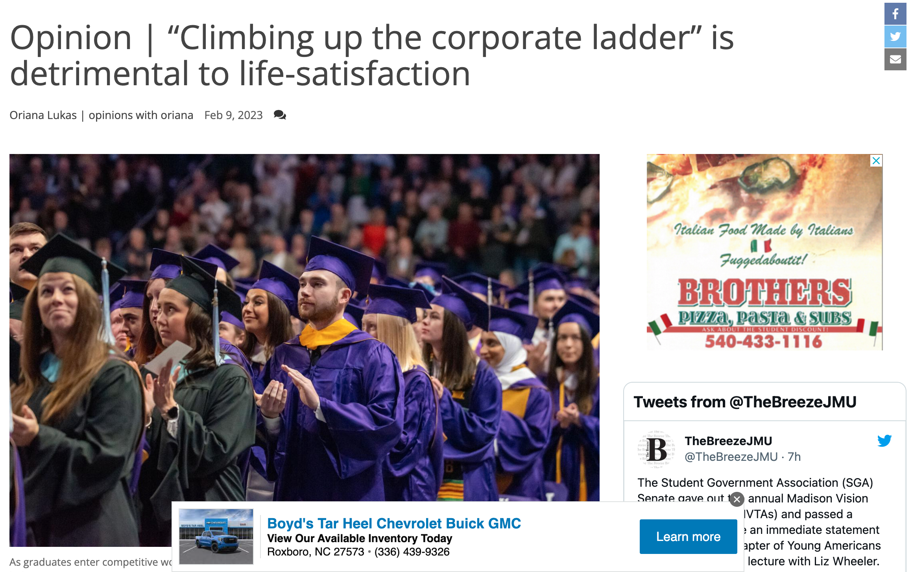
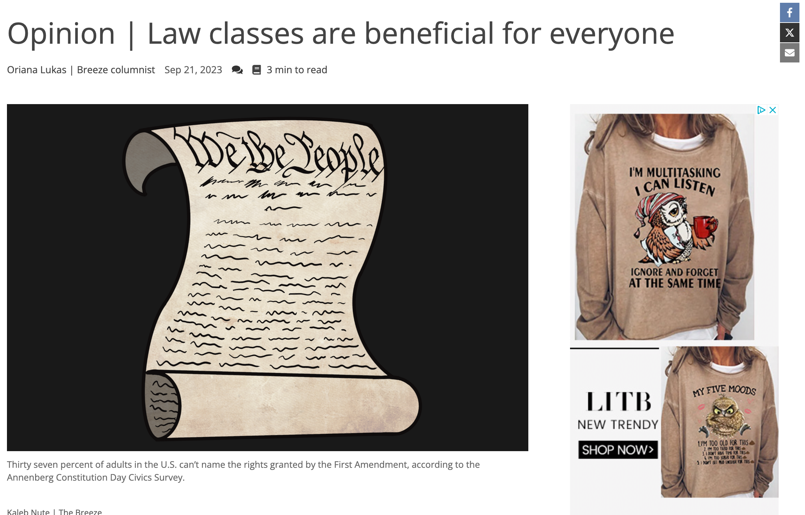
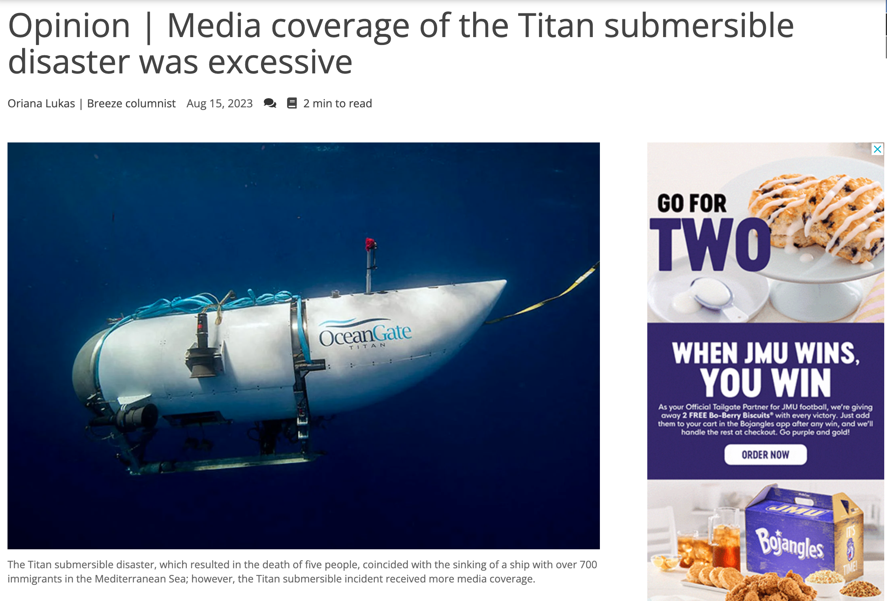

I've published opinion pieces for JMU's newspaper "The Breeze" for approximatley two years. I publish bi-weekly and write about content I personally feel passionate about. Here are some of my strongest articles I've done.



This was an opinion piece I wrote my fall semester of junior year. This article is one of my strongest articles as it was awarded the most popular opinion piece of the year. I wrote about the U.S. mentality of climbing up the corporate ladder and how in my opinion it's damaging to peoples' quality of life. Being a college student, it's scary having this mentality pushed on us all of the time. I do believe it's important to work hard, but trying to be the best constantly will just lead to burn out and overall dissatisfaction. Rather, we should be pushing people to work towards their individual goals and dreams. Corporate Ladder.
This was an opinion piece I wrote for "The Breeze" my fall semester of Senior year. I was currently enrolled in a mass comm law class that was required for my major. Prior to taking the class I hadn't realized the importance of learning the foundation of U.S. law. After several months of learning and being able to properly understand how and why the system worked, I decided to write an article based on the importance of law classes. I interviewed a professor who teaches law at JMU and UVA and got her opinion on the subject matter which helped strengthen my argument. I thought overall this was a very strong piece with lots of research to back my opinion. Law classes are beneficial for everyone.
This was another one of my recent opinion pieces I wrote the summer before my senior year of college. This article was focused around the issue that the media only focuses on one topic at a time. During the month of July, the Titan submersible had gone missing. The media swarmed the coverage of this submarine, with new headlines being published every few hours. On the other hand, an immigrant ship had sunk around the same time, with approximately 700 fatalities and little to no media coverage. I argued for the importance of journalists needing to focus on various subjects at once and seek the hard-hitting stories even if they're difficult to report on. Media coverage of the Titan submersible disaster was excessive.